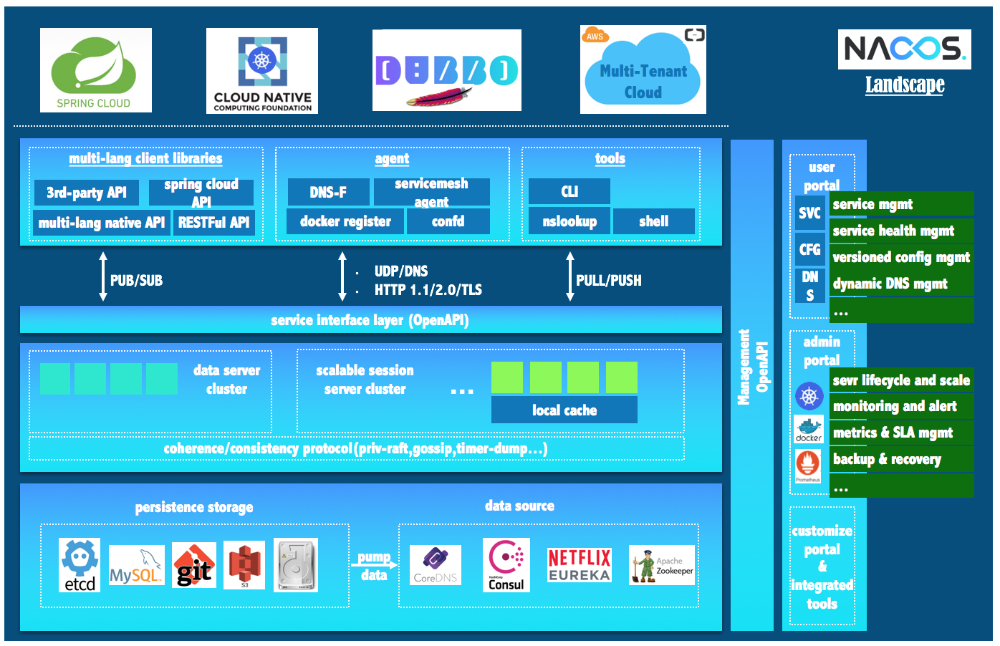
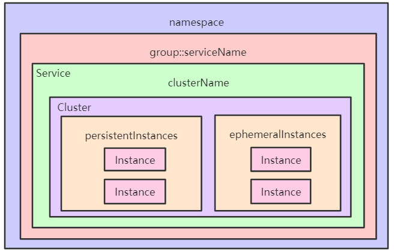
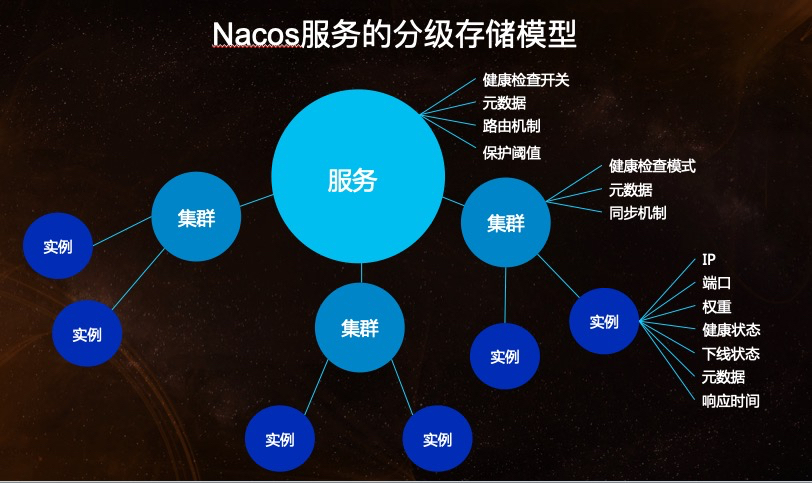
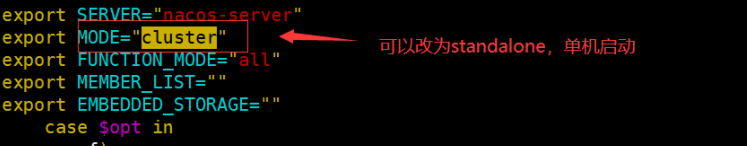
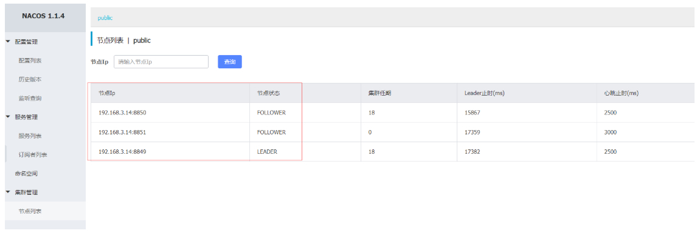
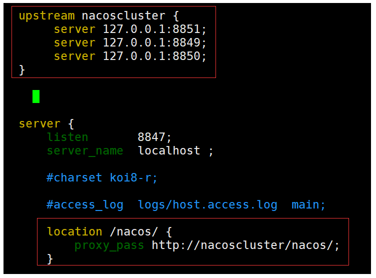

什么是Nacos
官网：https://nacos.io/zh-cn/docs/what-is-nacos.html
Nacos 致力于帮助您发现、配置和管理微服务。Nacos 提供了一组简单易用的特性集，帮助您快速实现动态 服务发现、服务配置、服务元数据及流量管理。
Nacos 帮助您更敏捷和容易地构建、交付和管理微服务平台。 Nacos 是构建以“服务”为中心的现代应用架构 (例如微服务范式、云原生范式) 的服务基础设施。
Nacos 的关键特性:
- 服务发现和服务健康监测
- 动态配置服务
- 动态
DNS服务 - 服务及其元数据管理
Nacos地图

Nacos生态图

关于如何在这些生态中使用 Nacos，请参考以下文档：
核心功能
服务注册：Nacos Client会通过发送REST请求的方式向Nacos Server注册自己的服务，提供自身的元数据，比如ip地址、端口等信息。Nacos Server接收到注册请求后，就会把这些元数据信息存储在一个双层的内存Map中。
服务心跳：在服务注册后，Nacos Client会维护一个定时心跳来持续通知Nacos Server，说明服务一直处于可用状态，防止被剔除。默认5s发送一次心跳。
服务同步：Nacos Server集群之间会互相同步服务实例，用来保证服务信息的一致性。 leader raft
服务发现：服务消费者（Nacos Client）在调用服务提供者的服务时，会发送一个REST请求给Nacos Server，获取上面注册的服务清单，并且缓存在Nacos Client本地，同时会在Nacos Client本地开启一个定时任务定时拉取服务端最新的注册表信息更新到本地缓存
服务健康检查：Nacos Server会开启一个定时任务用来检查注册服务实例的健康情况，对于超过15s没有收到客户端心跳的实例会将它的healthy属性置为false(客户端服务发现时不会发现)，如果某个实例超过30秒没有收到心跳，直接剔除该实例(被剔除的实例如果恢复发送心跳则会重新注册)
服务注册表结构

服务领域模型
服务（Service）是 Nacos 世界的一等公民。Nacos 支持几乎所有主流类型的“服务”的发现、配置和管理：

Nacos快速开始
预备环境准备
Nacos 依赖 Java 环境来运行。如果您是从代码开始构建并运行Nacos，还需要为此配置 Maven环境，请确保是在以下版本环境中安装使用:
- 64 bit OS，支持 Linux/Unix/Mac/Windows，推荐选用 Linux/Unix/Mac。
- 64 bit JDK 1.8+；下载 & 配置。
- Maven 3.2.x+；下载 & 配置。
下载源码或者安装包
源码下载编译
1 | git clone https://github.com/alibaba/nacos.git |
或者从 最新稳定版本 下载 nacos-server-$version.zip 包。
1 | unzip nacos-server-$version.zip 或者 tar -xvf nacos-server-$version.tar.gz |
启动服务器
Linux/Unix/Mac
启动命令(standalone代表着单机模式运行，非集群模式):
sh startup.sh -m standalone
如果您使用的是ubuntu系统，或者运行脚本报错提示[[符号找不到，可尝试如下运行：
bash startup.sh -m standalone
Windows
启动命令(standalone代表着单机模式运行，非集群模式):
startup.cmd -m standalone
默认启动方式修改：

服务注册&发现和配置管理
服务注册
1 | curl -X POST 'http://127.0.0.1:8848/nacos/v1/ns/instance?serviceName=nacos.naming.serviceName&ip=20.18.7.10&port=8080' |
服务发现
1 | curl -X GET 'http://127.0.0.1:8848/nacos/v1/ns/instance/list?serviceName=nacos.naming.serviceName' |
发布配置
1 | curl -X POST "http://127.0.0.1:8848/nacos/v1/cs/configs?dataId=nacos.cfg.dataId&group=test&content=HelloWorld" |
获取配置
1 | curl -X GET "http://127.0.0.1:8848/nacos/v1/cs/configs?dataId=nacos.cfg.dataId&group=test" |
关闭服务器
Linux/Unix/Mac
sh shutdown.sh
Windows
shutdown.cmd
或者双击shutdown.cmd运行文件。
集群部署
单机搭建伪集群，需要复制nacos安装包，土豪可以直接多个服务器搭建。
以其中一台服务器为例，做配置说明
- 修改
conf\application.properties的配置，使用外置数据源
1 | #使用外置mysql数据源 |
- 将
conf\cluster.conf.example改为cluster.conf，添加节点配置
1 | # ip:port |
数据库创建，sql文件在相应的安装包中
conf\nacos-mysql.sql启动脚本可以添加
jvm参数
按照上面的启动方式，分别启动三个nacos
测试

- 官方推荐，nginx反向代理，修改sever相应的ip和端口即可


...
...
Copyright 2021 sunfy.top ALL Rights Reserved